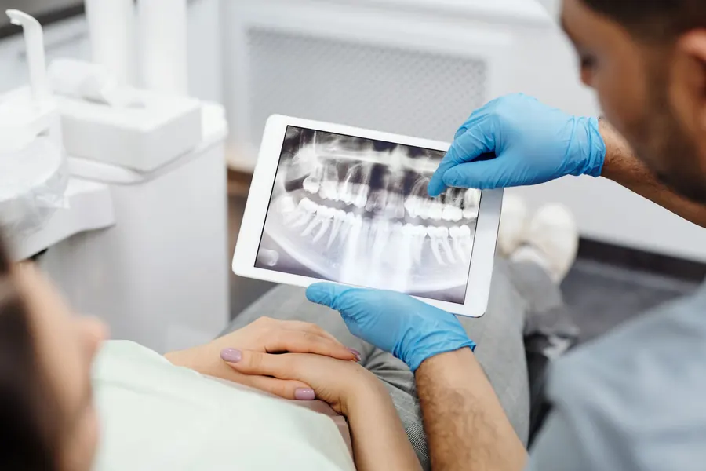
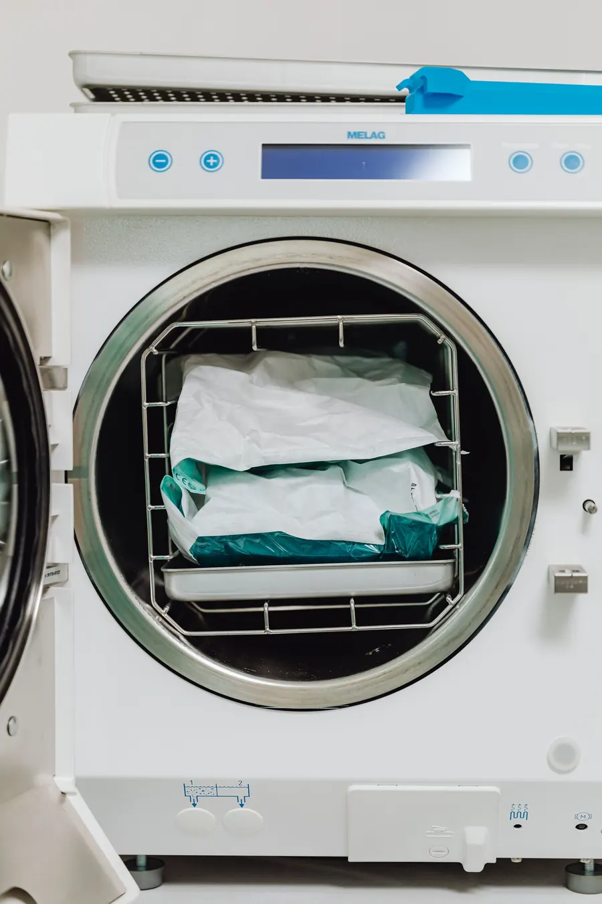
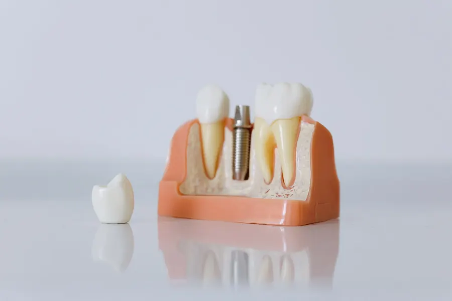

01 · MUAYENERöntgen ve değerlendirme
Kemik yapısı röntgenle incelenir; implantın uygun olup olmadığı ve seçenekler konuşulur.
İmplantın hangi aşamada ne olduğunu, zirkonyum ve laminanın kime uygun olabileceğini önceden okuyun. Randevu notunuzu seçerek hazırlayın, WhatsApp'tan gönderin.

"Kaç aşama, kaç kez gelirim?" sorusunun genel cevabı. Süre ve adım sayısı kişiye göre değişir; kesin plan muayenede yapılır.

01 · MUAYENEKemik yapısı röntgenle incelenir; implantın uygun olup olmadığı ve seçenekler konuşulur.

02 · YERLEŞTİRMELokal anestezi altında, steril koşullarda implant çene kemiğine yerleştirilir.

03 · İYİLEŞMEİmplantın kemikle kaynaşması beklenir; süre kişiden kişiye değişir, ara kontroller yapılır.
 04 · ÜST YAPI
04 · ÜST YAPIİmplantın üzerine diş (kron) takılır, çiğneme ve kapanış ayarlanır.
Sağlık tanıtım kurallarına uygun olarak sayfada fiyat, kampanya, hasta yorumu ve öncesi-sonrası görsel yer almaz. Metinler genel bilgilendirmedir; yayındaki metinleri siz onaylarsınız.
Başlığa dokunun; ne olduğu, nasıl değerlendirildiği ve o konuda randevu notu tek yerde.
Konuyu, eksik diş durumunu ve size uygun zamanı seçin. Mesaj kendiliğinden yazılır; WhatsApp'ta yalnızca göndermeniz kalır. Muayenehane uygun gün ve saati size yazar.
Doktortakvimi üzerinden randevu da sürer; bu not, WhatsApp'tan yazmayı tercih eden hasta içindir. Acil ağrıda arayın: 0258 263 96 87
Fotoğraflar temsilîdir; yayında muayenehanenizin kendi fotoğrafları durur. Fotoğrafa dokunun, büyüsün.
Uygunluk; kemik yapısı, diş eti ve genel sağlık durumuna göre muayene ve röntgenle değerlendirilir. Kararı hekim muayeneden sonra sizinle birlikte verir.
Genel olarak muayene, yerleştirme, iyileşme kontrolleri ve üst yapı aşamaları vardır. Ziyaret sayısı kişiye göre değişir; muayenede anlatılır.
Kullandığınız ilaçların listesini, varsa sağlık raporlarınızı ve daha önce çekilmiş diş röntgenlerinizi.
İkisi farklı işler içindir: zirkonyum dişi saran bir kaplama, lamina dişin ön yüzüne yapışan ince porselendir. Hangisinin uygun olduğu diş yapınıza göre belirlenir.
Randevu notu bölümünden WhatsApp'a mesaj hazırlayabilir, Doktortakvimi'nden randevu alabilir ya da 0258 263 96 87'yi arayabilirsiniz.